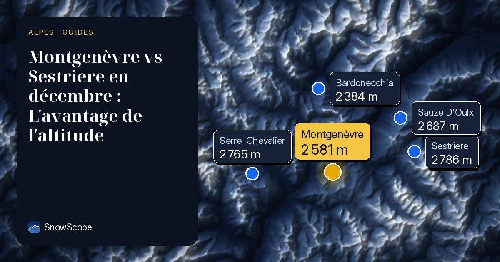

Montgenèvre vs Sestriere en décembre : L'avantage de l'altitude
Si vous préparez votre week-end de ski en décembre à la frontière franco-italienne, Montgenèvre devance Sestriere au niveau du village. Le pied de station est à 1 795 m avec 56 cm de neige habituelle en décembre, contre 24 cm à 1 600 m à Sestriere. Plus haut, les deux stations offrent une bonne neige, mais Montgenèvre vous garantit une couverture plus sûre dès le bas des remontées.
Consultez les prévisions neige en temps réel pour Montgenèvre sur l'application SnowScopeHauteurs de neige, alertes poudreuse et carte 3D, gratuitement.
Un pied de station déjà en altitude
Pour ceux qui viennent pour le week-end, commencer en altitude évite les soucis. Le domaine skiable de Montgenèvre compte 62 km de pistes et 24 remontées entre 1 795 m et 2 581 m, soit 786 m de dénivelé. Comme le bas des remontées se trouve à 1 795 m, vous commencez directement sur des hauteurs enneigées.
L'estimation de neige du 13 novembre 2026 indique 0 cm au pied de station, 5 cm à mi-montagne (2 188 m) et 11 cm au sommet (2 581 m). Les chutes de neige prévues sur les 7 prochains jours sont estimées à 23 cm au pied, 36 cm à mi-montagne et 52 cm au sommet. Sur les deux semaines à venir, du 13 au 26 novembre 2026, les prévisions à mi-montagne et au-dessus se situent entre 61 et 95 cm.

Neige habituelle vs décembres maigres
Dans notre historique de 46 hivers passés (de 1980-81 à 2025-26), Montgenèvre affiche 56 cm en décembre au pied de station, et 55 cm le 15 décembre. Lors d'un décembre maigre (1 hiver sur 10), la couche tombe sous les 22 cm, tandis qu'un décembre riche (1 hiver sur 10) dépasse les 102 cm. L'hiver dernier (2025-26) a enregistré 37 cm en moyenne au pied, et le décembre le plus pauvre fut celui de 2015-16 avec 13 cm, contre 123 cm lors du record de 1996-97.
Plus vous montez, plus la neige est présente. À mi-montagne (2 188 m), la moyenne est de 65 cm en décembre (64 cm le 15 décembre), variant de 28 cm lors d'un hiver maigre à 115 cm lors d'un hiver riche. Le sommet (2 581 m) affiche 78 cm en moyenne, avec 36 cm lors des hivers maigres et 139 cm lors des hivers riches.
Le timing est important pour un week-end. Au pied de station, 30 cm ou plus arrivent dans 61 % des hivers passés entre le 1er et le 7 décembre, et 76 % entre le 8 et le 14 décembre, pour atteindre 89 % du 15 au 21 décembre et 96 % du 22 au 28 décembre (avec 50 cm ou plus atteignant 35 %, 46 %, 59 % et 72 %). À mi-montagne, on observe 30 cm ou plus dans 70 %, 87 %, 98 % et 98 % des hivers passés, semaine après semaine. Au sommet, 30 cm ou plus sont présents dans 83 %, 91 %, 98 % et 98 % des cas.
Le prix des forfaits
Pour les skieurs attentifs à leur budget, les dates des forfaits font une vraie différence. Sur le site officiel, le forfait adulte 1 jour à Montgenèvre coûte 45,50 EUR jusqu'au 18 décembre 2026. À partir du 19 décembre 2026, la haute saison commence et le forfait adulte 1 jour passe à 56,00 EUR. Pour un séjour de 6 jours, le forfait adulte Montgenèvre + Monts de la Lune coûte 301,00 EUR en haute saison à partir du 19 décembre 2026.
Les prix des forfaits de Sestriere n'ont pas été vérifiés sur le site officiel, nous ne donnons donc aucun prix et ne prétendons pas quelle station est la moins chère.
Montgenèvre face à Sestriere de l'autre côté
Sestriere se trouve de l'autre côté de la frontière en Italie, avec un domaine skiable de 58 km de pistes et 22 remontées de 1 600 m à 2 786 m (1 186 m de dénivelé). Ses remontées les plus hautes affichent 91 cm en décembre habituel (90 cm le 15 décembre), avec 41 cm lors d'un hiver maigre et 163 cm lors d'un hiver riche.
Cependant, au bas des remontées, le mois de décembre est souvent pauvre à Sestriere à 1 600 m. La hauteur habituelle en décembre est de 24 cm (25 cm le 15 décembre), tombant sous les 6 cm lors d'un hiver maigre sur 10 et dépassant les 57 cm lors d'un hiver riche. Sur les quatre semaines, la base de Sestriere atteint 30 cm ou plus dans seulement 26 %, 33 %, 41 % et 48 % des hivers passés (et 50 cm ou plus dans 9 % à 17 %). À mi-montagne (2 193 m), la hauteur habituelle en décembre est de 51 cm.
Comment les 46 hivers ont évolué
Selon notre historique, les moyennes de décembre à Montgenèvre étaient plus élevées lors des 15 derniers hivers (2011-12 à 2025-26) que lors des 15 premiers (1980-81 à 1994-95). Au pied de station, la moyenne de décembre est passée de 41 cm à 68 cm. À mi-montagne, elle est passée de 49 cm à 76 cm, et au sommet de 62 cm à 89 cm, montrant une meilleure épaisseur récente en début de saison malgré des années maigres comme 2015-16.
Conseils aux skieurs
- Visez la période du 8 au 14 décembre ou skiez avant le 19 décembre 2026 pour profiter du forfait adulte 1 jour à 45,50 EUR avec 30 cm ou plus à mi-montagne dans 87 % à 98 % des hivers passés.
- Restez à mi-montagne (2 188 m) et au sommet (2 581 m) si vous montez entre le 1er et le 7 décembre, où 30 cm ou plus sont présents dans 70 % et 83 % des hivers passés, plutôt que 61 % au pied de station.
- Réservez votre forfait Montgenèvre sur le site officiel avant le début de la haute saison le 19 décembre 2026 à 56,00 EUR.
- Consultez la nivologie avant de skier hors-piste, surtout après des chutes de neige en début de saison sur des bases fines.
Autres cartes (sites externes)
Références et crédits
- Montgenèvre, official ski pass prices 2026-27 skipass.montgenevre.com/fr/tarifs-guichet
- SnowScope, December snow at three heights and today's snow map snowscope.app/
À propos de ces chiffres
Chiffres de neige : historique SnowScope, 46 hivers passés (1980-81 à 2025-26) à trois altitudes de chaque station (un modèle du passé corrigé de l'altitude : une estimation pour une zone, pas des mesures de la station) ; chiffres de décembre calculés à partir des hauteurs quotidiennes de ces hivers. Neige actuelle et tendance à deux semaines : prévisions SnowScope (tendance ECMWF et GFS, une fourchette, pas une promesse). Remontées et pistes : cartographie OpenSkiMap. Prix : pages officielles des stations ci-dessous, lues le 2026-11-13 ; les prix peuvent changer, vérifiez avant de réserver.
Bulletins d'avalanche officiels: Météo-France – Bulletin d'estimation du risque d'avalanche
Citer ce bulletin
Pour la recherche, l'enseignement ou la presse : chiffres et graphiques réutilisables librement sous CC BY 4.0 avec cette citation.
SnowScope (2026), Montgenèvre vs Sestriere en décembre : L'avantage de l'altitude, https://snowscope.app/blog/fr/2026/11/montgenevre-december-skiing-snow-record-cost-2026.html, consulté le 2026-11-14
SnowScope (Atlas Labs). (2026, November 14). Montgenèvre vs Sestriere en décembre : L'avantage de l'altitude. SnowScope snow reports. https://snowscope.app/blog/fr/2026/11/montgenevre-december-skiing-snow-record-cost-2026.html
BibTeX
@misc{snowscope2026montgenevredecemberskiin,
author = {{SnowScope (Atlas Labs)}},
title = {Montgenèvre vs Sestriere en décembre : L'avantage de l'altitude},
year = {2026},
month = nov,
howpublished = {\url{https://snowscope.app/blog/fr/2026/11/montgenevre-december-skiing-snow-record-cost-2026.html}},
note = {Published 2026-11-14 13:29 UTC; accessed 2026-11-14}
}· CC BY 4.0 · Méthodes, données et outils →
Montgenèvre : neige et température selon l'altitude, cet hiver vs l'hiver dernier (outils) →
Suivre Montgenèvre
Gratuit : un message quand la neige arrive, et la météo chaque matin.
Autres bulletins neige

Un séjour de 3 jours pas cher au lac de Côme en décembre, avec les vrais prix 2026-27 : trains, bateaux, funiculaire et ski à Piani di Bobbio ou Madesimo, l'économie par rapport à Cortina et les chances de neige à Noël.

Bonneval-sur-Arc affiche 52 cm en altitude le 8 novembre. Les semaines 10-11 correspondent à la pointe de la saison neigeuse. Découvrez ce qu'il faut emporter selon les prévisions.